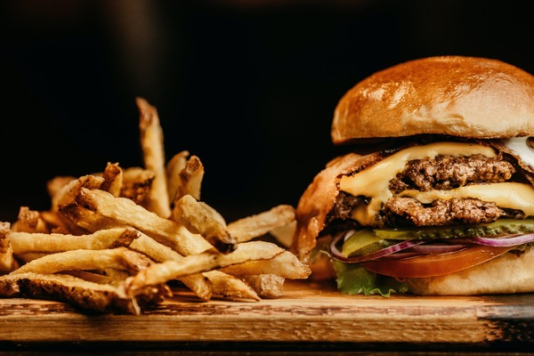

Hamburger

Best Hamburger Patty Recipe
Best Hamburger Patty Recipe - Thick or thin, made on the grill or stovetop,
this is the best and easiest all-purpose recipe for perfect hamburger patties every time!
Ingredient
- Ground chuck
- Crushed crackers or Panko bread crumbs
- Worcestershire sauce
- Egg
- Milk
- Seasonings
Steps
- Divide the meat and gently form it into 4 balls
- Flatten the balls into ¾-inch-thick patties
- Season the patties with salt and pepper.
- Oil the grill grate using a pair of tongs and a paper towel dipped in canola oil
- Cook, with the wells facing up, until the burgers release easily, 4 to 5 minutes for medium.